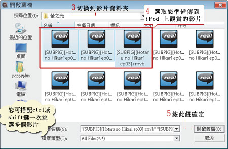
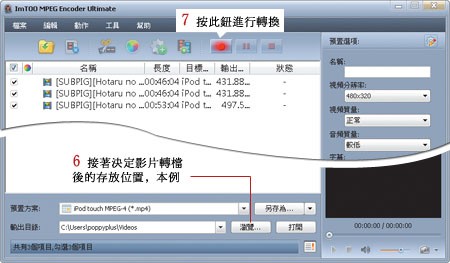
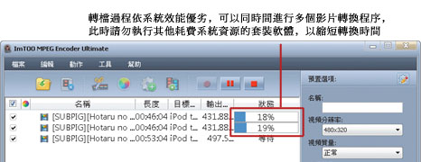
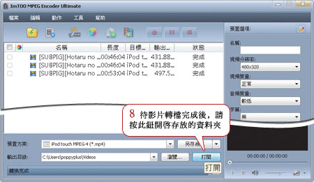

作者：施威銘研究室 著
書號：F9162
附件：附1片光碟片
定價：350 元
一般我們在網路上下載到的影片, 通常都是 avi、mpg 或是 rmvb 格式, 可是 iPod 只支 援專屬的 mp4 影片格式, 這時候該怎麼辦呢？當然是透過轉檔, 將下載的影片轉成 mp4 檔, 再輸入 iPod 中就搞定了！以下我們就以 第 10 章介紹過的 ImTOO MPEG Encoder 進行轉檔。
以下我們就示範以 rmvb 檔轉成 iPod 可支援的 MP4 格式, 請先雙按桌面圖示開啟 ImTOO MPEG Encoder 主畫面：





根據我們實際轉檔來估算影片檔的容量約 6 MB/Min (視轉檔的視訊、音訊位元率而有些微的差距)。這也難怪蘋果電腦號稱 60G 的 iPod 可以放入150 小時的影片, 就算您不眠不休的看也要 6 天才看得完喔！
最後我們只要將轉檔好的 mp4 影片傳入 iPod 就大功告成了：


完成後請退出 iPod, 馬上測試在 iPod 上是否能夠順利播放 MP4 影片吧！